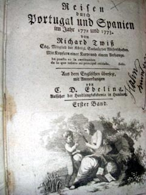

|
A. W. Hupel: Richard Twiß: Reisen durch Portugal und Spanien im Jahr 1772 und 1773 (Rezension). In: Allgemeine deutsche Bibliothek. 31. Bd., 2. St. Leipzig und Stettin: Friedrich Nicolai 1777. S. 533-534.
|

Reisen durch Portugal und Spanien im J. 1772 und 1773 von Richard Twiß Esq. – Mit Kupfern, einer Karte und einem Anhange. Aus dem Engl. übersetzt, mit Anmerkungen von C[hristoph] D[aniel] Ebeling – Erster Band. Leipzig bey Weygand. 1776. 438 Seiten in 8.
Warum wurde nicht lieber das wenige Merkwürdige und Neue, was diese Reisen enthalten, etwa in einem kurzen Auszug einem andern Werke beygefügt? Anfangs war das wirklich des Herausgebers Vorsatz: hätte er ihn doch befolgt! ohnehin ließ er ja die beyden Anhänge Nr. 2 und 3 (S. 142) ganz weg. Allgemein bekannte Sachen sollte man uns nicht in vollständigen Uebersetzungen aufdringen.
Einige von des Herausgebers Anmerkungen sind gut; nur Schade, daß er sie auf keinerley Weise von des Verf. seinen unterschieden hat. Er meynt zwar, der Inhalt bezeichne meistentheils den Urheber: aber oft ist es zweifelhaft, z. B. S. 301. 343. 356. u. a. O. m. – Die Karte und die Kupfer verdienen keinen Betracht, obgleich der Herausgeber versichert, die erste in Absicht auf die Namen verbessert zu haben; noch jetzt finden sich Fehler darinn, z. B. Trasos Montes anstatt Tralos montes.
Der Titel redet von einem ersten Theil; auch auf jedem Bogen steht unten Twiß Reisen 1 Tb. Aber von Twiß ist kein zweyter zu erwarten. Der Herausgeber hätte sich deutlicher ausdrücken, und nur den kurzen Titel, Neue Reisen durch Portugal und Spanien, seinem Buch geben sollen; so hätte der erste Theil die von Twiß, und der zweyte die von Plüer [der dänische Pastor Carl Christoph Plüer reiste 1759 bis 1764 durch Spanien] enthalten. Er will nämlich im zweyten Theil des verstorbenen Pastors Plüer Reisen durch Spanien liefern. Man kennt sie schon aus D. Büschings Magazin; nun sollen sie vermehrt und verbessert, nebst Plüers Reisen durch Valencia, Murcia etc. erscheinen. Die Erfahrung muß lehren, ob es sich der Mühe lohnt, Reisen, die in einem allgemein bekannten Buch stehen, noch einmal abdrucken zu lassen. Hätte der Verf. wirklich etwas Wichtiges beyzufügen gehabt, so wäre es vermuthlich bey seinem Leben, wenigstens im genannten Magazin, herausgekommen. Doch wir wollen nicht in voraus urtheilen. Inzwischen könnte lieber nur das Ungedruckte, in so fern es wichtig ist, sonderlich der gerühmte Theil des plüerschen Briefwechsels, herausgegeben werden.
Bey dem zweyten Theil wünschen wir weniger Druckfehler, oder eine angehängte Verbesserung derselben; sonst ist das Werk für viele Leser unbrauchbar.
Op.
|